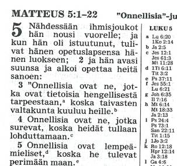
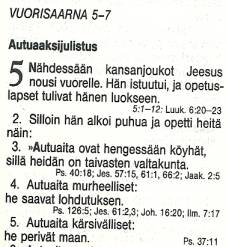
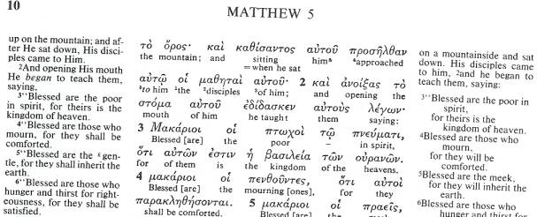

USKONTOOPPIMATERIAALIA NETISSÄ VUODESTA 1999 LÄHTIENPSYKOLOGIAN PIKALINKIT PSYKAN VIDEOABIKURSSIT: PSYKOLOGIAN MAAILMA -VIDEOKERTAUSKURSSI ABEILLE (vlogi) - UUSI OPS!! PS7 ABI KERTAUSKURSSI (opetustilanne) - VANHA OPS (OPS 2016-): PS1 Psyykkinen toiminta ja oppiminen PS2 Kehittyvä ihminen PS3 Tietoa käsittelevä ihminen PS4 Tunteet, psyykkinen hyvinvointi ja mielenterveys PS5 Yksilöllinen ja yhteisöllinen ihminen Uskonto: UE1 UE2 UE3 UE4 UE5 UE6 Filosofia: FI1 FI2 FI3 FI4 FI5 Jehovan todistajien määrä on maailmanlaajuisesti vähäinen (7,7 milj.), mutta heidän toimintansa sitäkin näkyvämpää ja aktiivisempaa. Todistajilla kirjojen ja lehtien kustantaminen ja jakaminen on hyvin tärkeää. Kuvassa näkyy heidän oma Uuden maailman raamatunkäännöksensä, suuri ja erinomainen Jehovan todistajuuden historiikki, opiskeluun ja kenttätyöhön käytetty eri oppeja analysoiva Puhu perustellen käyttäen Raamattua -kirja sekä evoluutioteoriaa vastustava teos. SUOMEN USKONNOLLINEN KENTTÄ (linkit sivustoni teksteihin): SUURIMPIA: Suomen evankelis-luterilainen kirkko Suomen ortodoksinen kirkko Suomen helluntaiherätys Islam Jehovan todistajat Suomen Vapaakirkko Katolinen kirkko Suomessa Suomen Adventtikirkko Mormonit MUITA KRISTILLISIÄ OSIN RYHMITELTYNÄ: Pelastusarmeija Anglikaanit Baptismi Metodismi Evankelikaalisia Karismaattisia Muita luterilaisia ja kristillisiä MUITA USKONNOLLISIA YHTEISÖJÄ OSIN RYHMITELTYNÄ: Krist.vaikutteisia Buddhalaisuus Juutalaisuus Hindulaisperäisiä Synkretistisiä Muita |
Jehovan todistajat
Jehovan todistajat (viralliset sivut)
JT-tuki (huom! kriittinen sivusto) Veljesseura (huom! kriittinen sivusto)
- Huom! Jehovan todistajien käsittelyssä on ehkä selkeimmin sivustossani otettu esiin opin ja kultin erilaisuus suhteessa perinteiseen protestanttiseen raamatuntulkintaan. Tämä on tehty, koska eri henkilöt ovat pyytäneet minua kertomaan perusteluja ko. yhteisön oppien ongelmakohdista verrattuna esim. luterilaiseen opintulkintaan. Tarkoitukseni ei ole sinänsä hyökätä yksittäisiä Jehovan todistajia tai heidän uskonnonvapauden nojalla harjoittamaansa uskontoa vastaan. Suosittelenkin tutustumaan Jehovan todistajien omaan uskontulkintaan heidän omilta nettisivuiltaan, heidän kirjallisuutensa kautta tai keskutelemalla heidän kanssaan, kun he tekevät ovelta ovelle työtä. Itse esimerkiksi olen käyttänyt lukion opiskelijaryhmiäni n. 18 vuotta Jehovan todistajien Äänekosken valtakunnansalilla ja ystävystynyt muutamien erittäin mukavien ja ystävällisten Jehovan todistajien kanssa (jopa aikoinaan käynyt perhokalassakin kahden Jehovan todistajan kanssa!) Oma periaatteeni on aina näissä asioissa se, että lopultakaan ihmisten kanssa en halua väitellä, vaan asiat väittelevät. Oma näkemykseni on se, etten voi tietää mistään lopultakaan mitään varmaa. Sellaista elämä on. - alkuaikoina sanomaa levitettiin mm. äänielokuvien avulla (1914 lähtien). Tunnettu elokuva oli ns. Luomisnäytös, jossa esiteltiin koko maailmanajat luomisesta Kristuksen tuhatvuotishallituksen loppuun. - V. 1914 Russell julisti lokakuun 2. päivänä "pakanain ajat päättyneeksi". Jehovan todistajat ovat ymmärtäneet, että se, mitä Russell oli ennustanut ja odottanut, ei toteutunut, mutta he kuittaavat kirjallisuudessaan vuoden seuraavasti: "Kaikki, mitä odotettiin tapahtuvaksi vuonna 1914, ei toteutunut, mutta pakanain ajat päättyivät silloin ja se oli erikoisen merkittävä vuosi." (JT - Jehovan todistajat tällä vuosisadalla, 1979, s. 7). Tavallisesti viitataan I maailmansodan syttymiseen luomaan vuodelle "erikoisen" piirteen. Toisaalta juuri I maailmansota kumosi Russellin ennustuksen tuhatvuotisesta rauhanvaltakunnasta täydellisesti. Ei tullut rauha, vaan alkoi sota. - Vuonna 1916 (31.10) Russell kuolee 64-vuotiaana. Seuraavan vuoden alussa seuran uudeksi presidentiksi valitaan Joseph Franklin Rutherford. Rutherfordin aikana jouduttiin vastaamaan mm. vuoteen 1914 liittyvästä tulkinnasta ja ennustuksen erehtyneisyyden aiheuttamista pettymyksistä. Jeesuksen näkyvä tai näkymätön paruusia ajatus kiellettiin ja todettiin, että tuona vuonna 1914 Kristus alkoi hallita taivaassa ja siinä mielessä pakanavaltioiden hallintavalta maailmassa oli kohdannut päätepisteen. Rutherford pitikin vuonna 1918 kuuluisan esitelmänsä aiheesta "Maailma on loppunut, mutta miljoonat, jotka nyt elävät, eivät kuole koskaan". Esitelmän vuoksi Jehovan todistajat ovatkin odottaneet "asiainjärjestelmän" päättymistä koko tämän vuosisadan yhä kiihtyvämmässä määrin. - v. 1925 piti tapahtua vanhan liiton pyhien (Aabraham, Joosef ja Daavid ym.) ylösnousemus kuolleista. Tämän odotuksen keskellä Rutherford hankki San Diegoon, Kaliforniaan, pyhiä varten talon, jolle annettiin nimeksi Beth Sarim eli ruhtinasten talo. Ruhtinasten talo myytiin Rutherfordin kuoleman jälkeen ja vuonna 1950 korjattiin oppi, jonka mukaan Aabraham, Joosef ja Daavid herätettäisiin kuolleista ennen tämän asiainjärjestelmän päättymistä. - 1920- ja 1930-luvuilla käytetään julistuksessa erityisesti radiota. Jo tätä ennen on käytetty laajasti traktaatteja eli lentolehtisiä ja lehtiä. Vuonna 1919 alkaa ilmestyä nykyistä Herätkää! lehteä vastaava Kultainen Aika. Etenkin vuodesta 1926 lähtien raamatuntutkijat alkavat levittää sunnuntaisin kirjallisuutta talosta taloon. Kun Jehovan todistajat julistivat muut kristilliset kirkot saatanan organisaatioiksi, papit valehtelijoiksi jne. eivät radioasemat enää suostuneet levittämään Jehovan todistajien opetuksia. Tämän jälkeen todistajat alkoivat käyttää äänilevyjä julistuksessaan. - 1931 otetaan käyttöön nimi Jehovan todistajat. Nimi tulee Jes. 43:10 "Te olette minun todistajani, sanoo Jehova, minun palvelijani, jonka minä olen valinnut". - Vuonna 1938 julistetaan Jehovan todistajien järjestö teokraattiseksi (teokratia = Jumalan valta). Järjestö ei ole kansanvaltainen, vaan Jumalan vallassa. Jehovan hallitus eli järjestö on ehdottomasti jumalanvaltainen. 15.8.1938 ehdotettiin seuraavaa päätöstä tehtäväksi kaikissa seurakunnissa: "Me, Jumalan nimelleen ottaman kansan ryhmä, joka on nyt x:ssa, tunnustamme, että Jumalan hallitus on puhdas jumalanvalta ja että Kristus Jeesus on temppelissä ja huoltaa ja valvoo täydelleen Jehovan näkyväistä järjestöä samoin kuin näkymätöntäkin ja että SEURA on Herran näkyväinen edustaja maan päällä, ja me pyydämme Seuraa järjestämään tämän ryhmän palvelukseen sekä määräämään sen eri palvelijat, jotta me kaikki voisimme työskennellä yhdessä rauhassa, vanhurskaudessa, sopusoinnussa ja täydellisessä yksimielisyydessä. Liitämme mukaan luettelon niiden tässä ryhmässä olevien henkilöitten nimistä, jotka näyttävät meistä kypsemmiltä ja jotka niin ollen näyttävät parhaiten sopivan eri paikkoihin palveluksessa." Osa Jehovan todistajista koki, että Rutherford pyrki teokratian kautta saamaan enemmän valtaa todistajiin. Mielenkiintoista on myös se, että vuoteen 1945 asti Seuran johtokunnan jäsenet olivat valinneet rahalahjoitusten perusteella äänioikeuden saaneet äänestäjät. - Rutherford kuoli vuonna 1942 ja tämän jälkeen voimakasjohtoisten miesten aika oli järjestössä ohitse. Rutherfordin seuraajaksi nousi Nathan H. Knorr (k. 1977). Nykyisin johdossa on ns. hallintoelin, johon kuuluu 12 miestä. Heidät "Jumala on voidellut Jeesuksen Kristuksen perijätovereiksi", vuonna 1992 näillä 12 jäsenellä oli takanaan Jehova Jumalan palvelijoina kokoajanpalvelusta yhteensä 728 vuotta (henkeä kohden siis n. 61 vuotta!). • Suomeen 1900-luvun alussa - Ensimmäiset Jehovan todistajat Suomeen Ruotsista vuonna 1906. Virallisesti rekisteröityi uskonnolliseksi yhdyskunnaksi v. 1945. Pääpaikka on Tikkurilassa. • Jäseniä 18 071 (12.2007) - koko maailmassa Jehovan todistajia n. 7,7 miljoonaa (2011) • Opillisia korostuksia: - Jehovan todistajien opissa on tunnetusti tapahtunut runsaasti muutoksia järjestön historian aikana. Nykyisin korostetaankin, etteivät ihmiset, ei edes hallintoelin, voi olla varma asioista, vaan lopun lähetessä "ymmärrys lisääntyy" (Dan.12:4). Tällä Danielin kirjan lainauksella Jehovan todistajat pystyvät nykyisin hyvin kääntämään voitoksi opissa tapahtuneet muutokset. - Jehovan todistajat esimerkiksi viettivät alkuvuosikymmeninä joulua ja syntymäpäiviä, käyttivät tunnuksenaan ristiä jne. mutta näistä tavoista luovuttiin, kun "ymmärrys lisääntyi". - opin perustana Raamattu, jota tulkitsee oikein hallintoelin (ns. uskollinen orja) - "uskollinen orja" ovat ne 144 000 ihmistä, jotka on valittu maan päältä hallitsemaan yhdessä Kristuksen kanssa taivaissa. Tähän lukumäärään sisältyy apostolit, ja määrä tuli täyteen Seuran mukaan v. 1935 (tosin nykyisin käsitys on muuttunut). Nykyinen Jehovan todistajien johtoryhmä, hallintoelin sekä joukko voideltuja elää vielä maailmassa, heitä on nykyisin noin 8000. Tällä uskollisella orjalla on kyky jakaa opetusta sekä valvoa Jehovan todistajien ryhmää. Oppi uskollisesta orjasta perustuu muutamiin raamatunkohtiin, erityisesti kohtaan Matt. 24:45 "Kuka oikeastaan on se uskollinen ja ymmärtäväinen orja, jonka hänen Isäntänsä on asettanut huolehtimaan palvelusväestään, antamaan heille heidän ruokansa oikeaan aikaan?" (Uuden maailman käännös). Ilm.7:4-8, 14:3-5 kerrotaan 144 000 joukosta, jotka ovat ostetut maasta, ja jotka ovat juutalaisia, eivät ole saastuttaneet itseänsä naisen kanssa jne. Mielenkiintoista on, että tähän ryhmään kuuluvat Jehovan todistajat ovat useimmat naimisissa, eivätkä niinkuin neitsyet. Perusteluna avioliitolle heidän keskuudessaan on Pietarin avioliitto, sillä Pietarin oletetaan kuuluneen uskolliseen orjaan (ja kuuluvan siihen taivaassa). - hallintoelimen valvonnassa tuotetaan kirjallisuutta ja Vartiotorni sekä Herätkää! lehtiä. Kirjat ja lehdet ovat kaikkialla maailmassa samanlaisia. Kääntäjät pyrkivät säilyttämään täysin alkuperäisen sanoman. - Tammikuussa 2007 hallintoelimeen kuuluivat (tulo vuosi) Anthony Morris (2005), David H. Splane (1999), Geoffrey Jackson (2005), Gerrit Lösch (1994), Guy H. Pierce (1999), John E. Barr (1977), M. Stephen Lett (1999), Samuel F. Herd (1999) ja Theodore Jaracz (1974) . - JäRJESTöN HALLINTO: - Jehovan todistajilla on selkeä hierarkinen johto, jota kutsutaan teokraattiseksi. Jehova johtaa järjestöään Kristuksen ja 144 000 uskollisen orjan välityksellä. Käytännössä johto on New Yorkissa, Brooklynissa, josta järjestöä johtaa em. hallintoelin, ja seuraa johtaa presidentti. New Yorkin päätoimisto johtaa koko maailman laajaa järjestöä, valvoo ja kontrolloi toimintaa sekä hyväksyy järjestön opit. - Haaratoimistot ovat kussakin maassa sijaitsevia elimiä, jotka vastaavat maan toiminnasta. Päätoimisto on valtuuttanut ns. vyöhykevalvojat tarkastamaan eri maiden haaratoimistojen toimintaa. Suomen haaratoimisto sijaitsee Tikkurilassa (Bethel). Maan seurakuntien toimintaa valvoo haaratoimistovalvoja. Piirivalvojat, kierrosvalvojat ja em. haaratoimistovalvojat nimittää kansainvälinen Vartiotorniseura käsin. Tietyt Jehovan todistajien seurakunnat muodostavat "kierroksen", jota valvoo kierrosvalvoja, joukko kierroksia muodostaa piirin, jota taas piirivalvojat valvovat. - seurakuntatasolla johdossa on vanhimmisto; esivalvoja on vanhimmiston puheenjohtaja, kenttävalvoja vastaa koulutuksesta, raamatuntutkisteluvalvoja uusintakäynneistä kiinnostuneiden ihmisten luona. Nämä kolme valvojaa muodostavat palveluskomitean. • Raamatusta Jehovan todistajat ovat kääntäneet oman ns. Uuden maailman käännöksensä. - Vuonna 1950 ilmestyi Raamatun kreikkalaisten kirjoitusten Uuden maailman käännös englanniksi. - luottamusta hallintoelimen valvomaan engl. Uuden maailman käännöksen oikeellisuuteen osoittaa mm. se, että suomenkielinen Uuden maailman käännös on käännetty vuoden 1984 englanninkielisestä tarkistetusta laitoksesta huolellisesti vertailemalla heprealaiseen, aramealaiseen ja kreikkalaiseen pohjatekstiin, vuonna 1995. - Uuden maailman käännöksessä on pyritty sanatarkkuuteen, samojen alkukielen sanojen kääntämiseen samoilla sanoilla, ymmärrettävyyteen, nykykielisyyteen jne. LISÄYS: UUDEN MAAILMAN KääNNöKSEN ONGELMAKOHTIA (nettiversiosta puuttuvat kreikankieliset tekstiosat) + Miksi Jehovan todistajat ovat Uuden maailman käännöksissään poikenneet kreikkalaisten kirjoitusten alkutekstistä lisäämällä tekstiin Jumalan nimen Jehova, vaikkei koko Jumalan nimeä (JHWH) mainita Uudessa testamentissa? + Jehovan todistajat ovat omaan UT:n käännökseensä lisänneet ko. nimen (Jehova) 237 kertaa. Todistajat ovat väittäneet, että kreikkalaisissa kirjoituksissa olisi alunperinkin sana Jehova. Näin ei kuitenkaan ole. Tämän lopulta myöntää myös Jehovan todistajien oma opaskin: "Raamatun kreikkalaisten kirjoitusten, 'Uuden testamentin', suhteen tilanne on erilainen. Ilmestyskirjan (Raamatun viimeisen kirjan) käsikirjoituksissa Jumalan nimi on lyhennetyssä muodossaan 'Jah' (sanassa 'halleluja'). Mutta muutoin mikään niistä vanhoista kreikkalaisista käsikirjoituksista, joita on saatavilla nykyään Matteuksesta Ilmestyskirjaan, ei sisällä Jumalan nimeä kokonaisuudessaan." (Jumalan nimi joka pysyy ikuisesti, Vantaa 1988, s.23). Jehovan todistajat ovat lisänneet nimen, koska heidän on pakko selittää, että Jeesus olisi omana aikanaa lausunut Jumalan nimen ääneen, muutoinhan heidän oma Jehova-korostuksensa menettää merkityksensä. Jeesuksen lausuntatavastameillä ei kuitenkaan ole mitään tietoa, paitsi se, mikä on löydettävissä kreikkalaisista kirjoituksista, joiden perusteella Jeesus käytti Jumalasta varhaiskristittyjen hänestä itsestään käyttämää "Herra" (kyrios) nimeä, sekä mm. nimiä Isä, Isi (ar. abba), Jumala(theos). + Jehovan todistajat perustelevat Jehova-nimen ottamista kreikkalaisiin kirjoituksiin (UT) mm. seuraavilla syillä (lainaukset lehtisestä "Jumalan nimi joka pysyy ikuisesti", Vantaa 1988): 1) Jeesus käytti nimeä: "On siksi epätodennäköistä, ettei hän olisi lausunut Jumalan nimeä, varsinkin kun hänen oma nimensäkin, Jeesus, merkitsi 'Jehovan pelastus'." (s.14-15). Jehovan todistajat arvailevat, että Jeesus olisi lausunut ajan tavasta poiketen Jumalan nimen lukiessaan Jes.61:1,2. Tälle ei kuitenkaan ole mitään perusteita. Matteus olisi heprealaisessa alkutekstissään käyttänyt nimeä. Todistajat vetoavat tässä Hieronymuksen mainitaan Matteuksen heprealaisesta alkutekstistä. 2) Matteuksen evankeliumin heprealaisperäisyys on kuitenkin taas tieteellisesti todistamaton arvaus, ja vaikka se pitäisikin paikkaansa, halusivat varhaiskristityt (n. 60-80 j.Kr. evankeliumin synnyn ajoitustavasta riippuen), että kreikkalaisessa tekstissä "Jehova" nimi ei esiinny. 3) VT:n kreikannoksessa Septuaginnassa (LXX) esiintyy Jumalan nimi heprealaisin konsonantein JHWH. Vain parissa Septuaginnan kopiossa on todella säilynyt JHWH hepreaksi, mutta jo kuuluisissa "koodekseissa" (200-400 -luvulta) tämä puuttuu ja JHWH on käännetty kreikaksi sanalla kyrios eli Herra. Eikö sekä Septuaginnan että kreikkalaisten kirjoitusten kyrios-painotteisuus osoita paremminkin sitä, että heti alusta alkaen aidot kristityt halusivat korostaa oman Herransa Jeesuksen Kristuksen sekä Jahven yhtenevyyttä toisiinsa? Sekä Isä että Poika ovat yhtä, siis Herra. Jeesuksen herruuden isolla H:lla Jehovan todistajatkin joutuvat myöntämään mm. suomalaisessa Uuden maailman käännöksessä 1.Kor.12:3. 4) Kristittyjen luopiokirkko poisti Jumalan nimen Raamatusta. Tämä todella on Jehovan todistajien väite! "Juutalaiset siis kieltäytyivät lausumasta Jumalan nimeä, kun taas kristillinen luopiokirkko sai sen poistetuksi kokonaan Raamatun molempien osien kreikankielisistä käsikirjoituksista samoin kuin muille kielille tehdyistä käännöksistä." (s.25). Tämä väite on siinä mielessä ongelmallinen, että tosiasia on, että todistajien väitteitten paikkansapitämiseksi täytyi siis kristikunnan olla luopiotilassa jo 100-luvun lopulla! Muutoinhan tällä hetkellä tunnetuista vanhimmista käsikirjoituskopioista olisi täytynyt löytyä Jehovan nimi. Historiasta tiedämme, että 100-300 -luvuilla oli kristillinen kirkko vainojen alla ja ehkäpä Jahveen sekä Jeesukseen voimakkaammin kuin koskaan turvaava. + Kootusti voidaan kuitenkin todeta: Jehovan todistajat ovat käännöksessään tehneet käännösvirheen 237 kohtaan, eivätkä ole olleet edes systemaattisia, sillä vaikka he väittävät "palauttaneensa" Jehova-nimen VT:n lainauksiin, he ovat "palauttaneet" nimen myös sinne, missä ei lainata VT:a suoraan ja lisäksi he eivät ole systemaattisesti kääntäneet kyrios-sanaa Jehovaksi muutoin kuin omaa opillista tulkintaa tukevissa kohdissa. + Jehovan todistajat vetoavat usein siihen, että koska Jeesus opetti opetuslapsilleen Isä Meidän -rukouksen, jossa lausutaan "pyhitetty olkoon sinun nimesi", on Jeesuksen ja opetuslasten täytynyt pyhittää ja siten myös lausua ääneen Jumalan nimi (Jehova). Näin ei kuitenkaan välttämättä ole ollut, vaan nimenomaan Jumalan nimen pyhittäminen rukouksen sanoissa viitannee siihen, että Jumalan nimi on juutalaisen tavan mukaan niin pyhä, ettei sitä ääneen lausuta. Jeesus noudatti näin tyypillisesti juutalaista tapaa tässä asiassa. Samalla hän opetti ihmisiä tuntemaan Jumalan nimenomaan rakastavana Isänä. + Kun Jehovan todistajat väittävät kristittyjen tehneen vääryyden, kun he eivät ole kääntäneet JHWH-nimeä Vanhan testamentin puolelle suoraan, vaan korvanneet sen vastineella "Herra" (tai Lord jne.), niin tässä väitteessään Jehovan todistajat ovat oikeassa. Niihin kohtiin, joissa Jahve-nimi esiintyy Vanhassa testamentissa, voitaisiin (ja näin tulisi tehdä) alkutekstin nojalla palauttaa Jumalan nimi paikalleen. Raamatun kääntämisen perustana tulee kuitenkin olla paras mahdollinen alkuteksti, ei oletettu olematon alkuteksti. + Otan seuraavassa esimerkkejä Uuden maailman käännöksestä (UM) löydettävistä selkeitä JT:n omaa oppia tukevia muutoksia, jotka sotivat joko alkutekstiä vastaan tai sanan merkityksen säännönmukaista kääntämistä vastaan. - Luuk.23:43 Ja hän sanoi hänelle: "Totisesti minä sanon sinulle tänään: sinä tulet olemaan minun kanssani paratiisissa" (UM) --- ja sanoen hänelle: Totisesti sanon sinulle: tänään kanssa minun tulet olemaan paratiisissa (sanasanainen käännös/JR) --- UM:n käännökseen on tehty tahallinen tulkinta kaksoispisteen sijoittamisessa sanan "tänään" jälkeen. Majuskelitekstissä ei ole välimerkkejä, mutta niissä tekstilaitoksissa, joissa välimerkit ovat on se sijoitettu, kuten Jeesuksen muissa "Totisesti minä sanonteille"-lauseissa, sanan "teille" (alkutekstissä sanan "sanon") jälkeen. Jehovan todistajat ovat muuttaneet lauseen ajatusta, koska heidän käsityksensä mukaan paratiisi sijaitsee uudistetun maan päällä ja Jeesuksen lausuessa sanansa, tuo paratiisi-aika ei ollut vielä käsillä. --- Toiseksi JT opin mukaan ryövärin sielu kuolee totaalisesti (eikä siis ole olemassa ns. välitilaa), joten kuoleman jälkeen hän ei voisi olla missään olomuodossa "tänään". Kyseessä on kuitenkin tietoisesti tehty väärä käännös. Vaikka emme lähtisikään rakentamaan oppia paratiisista jonnekin tuonpuoleiseen olotilaan, niin meidän tulee silti pitäytyä alkutekstiin ja sen kirjaimelliseen tulkintaan ennen muuta. Voihan toki olla, että Jeesus puhuu ristillä vertauksellisesti "paratiisista", mutta oli miten oli, meillä ei ole oikeutta muuttaa alkutekstin selvää sanajärjestystä ja ajatusta, kuten Jehovan todistajat ovat nyt tehneet. On erikoista, että JT ovat löytäneet erään Alexander Thomson nimisen heprean ja kreikan kielen "kommentoijan" (?) puolustelemaan käännöstapaa (Koko Raamattu on Jumalan henkeyttämä ja hyödyllinen, Vantaa 1991, s.329). Esimerkiksi maailmankuulu saksalainen eksegeetti Eduard Schweizer mainitsee teoksessaan: "On täysin epätodennäköistä, että olisi tarkoitettu 'Sanon sinulle tänään'" (Luukkaan evankeliumi, Kirjapaja, Juva 1992, s.249). - Joh.1:1 Useimmiten, kun UT:ssa (myös UM:n käännös) mainitaan kr. sana theos (Jumala), on se myös käännetty sanalla "Jumala" (ellei asiayhteys selkeästi ilmaise jotakin muuta, Joh.10:34,35; Apt.7:40 jne.). UM-käännös tekee kuitenkin poikkeuksen Joh.1:1 lopussa, jossa theos on käännetty kylläkin sanalla jumala, mutta tulkinnallisesti kirjoitettu pienellä kirjaimella "jumala". --- Perinteisesti Jehovan todistajat ovat perustelleet Jeesuksen kutistamista tässä kohden pienellä kirjoitetuksi "jumalaksi" esittämällä, että sana theos on tässä ilman artikkelia. Samoin sana theos on kuitenkin ilman artikkelia myös esimerkiksi kohdissa Matt.6:24 ("Ette voi olla Jumalan ja rikkauden orjia"/UM), Luuk.3:2 ("tuli Jumalan julistus Johannekselle"/UM), Luuk.20:38 ("Ei hän ole kuolleiden Jumala, vaan elävien"/UM) ja Room.8:33 ("Kuka esittää syytöksen Jumalan valittuja vastaan? Jumala on se, joka julistaa heidät vanhurskaaksi"(UM). --- Johdonmukaisesti olisi Joh.1:1 pitänyt kääntää vastaavasti "Sana oli Jumala", kuten muut raamatunkäännökset tekevät. Tällöin kuitenkin korostuisi protestanttinen tulkinta Jeesuksen jumaluudesta (ks. tästä myöhemmin). Ristiriita on myös siinä, että Joh.1: n alussa korostetaan usein, että Sana (Jeesus) on Jumalan luona (rinnalla) ja hän on JT:n mukaan jumala. Kuitenkin UM-käännöksenkin mukaan 5.Moos.32:39 sanoo: "Huomatkaa nyt, että minä - minä se olen, eikä minun rinnallani ole jumalia". Nyt, jos Jeesus on erillinen "jumala", niin Jumalan rinnalla on todellinen toinen jumala, jota kutsutaan UT:ssa monin paikoin myös "Jumalan Pojaksi" (vrt. ihmisestä syntynyt on ihminen, Jumalasta syntynyt on loogisesti Jumala). - Kol.1:15-17 Jehovan todistajat ovat lisänneet sanan "muu" useaan kohtaan mainittuja jakeita, jotta Jeesus voitaisiin sijoittaa luoduksi olennoksi ja korostaa hänen ei-jumalallisuuttaan. UM: "Hän on näkymättömän Jumalan kuva, koko luomakunnan esikoinen, sillä hänen välityksellään luotiin kaikki muu, mitä on taivaissa ja maan päällä, näkyvät ja näkymättömät, olkootpa ne valtaistuimia tai herrauksia tai hallituksia tai valtoja. Kaikki muu on luotu hänen välityksellään ja häntä varten. Hän myös ennen kaikkea muuta, ja hänen välityksellään kaikki muu saatettiin olemaan." --- Alkutekstissä ei ole sanaa "muu" yhdessäkään neljästä kohdasta, johon UM-käännöksessä sana on tietoisesti lisätty oman opintulkinnan tueksi. On erittäin kyseenalaista, että JT:n johto väittää UM:n olevan kirjaimellinen käännös, jossa pyritään jopa alkukielten sanajärjestys säilyttämään (Koko Raamattu on Jumalan henkeyttämä ja hyödyllinen, Vantaa 1991, s.327). Kuitenkin UM:n käännökseen on jopa lisätty sanoja. Uuden testamentin ja Paavalin mukaan Jeesuksessa luotiin todella kaikki sanan varsinaisessa merkityksessä. Jehovan todistajat pyrkivät "muu"-sanalla korostamaan, että Jehova itse loi Jeesuksen ja loppu muu luotiin Jeesuksen välityksellä. Alkuteksti ei tue tällaista tulkintaa. - proskyneoo - Kr. sana tarkoittaa "suudella kohti", osoittaa jollekin kunnioitusta (esim. kumartumalla maahan hänen eteensä), kumartaa, kumartaen rukoilla, palvoa, rukoilla. --- Jehovan todistajat käyttävät termiä UT:ssa valikoiden. Kun sana esiintyy selkeästi Jumalan yhteydessä, on valittu käännösvaihtoehdoksi "palvoa" (vrt. Joh.4:20, Ilm.5:14, 7:11 jne.), kun taas sana liittyy Jeesuksen palvomiseen, on se käännetty sanalla "kumartaa" (Matt.14:33, 28:9, Luuk.24:52, Hepr.1:6 jne.). JT:t väittävät, että heidän käännösperiaatteenaan on ollut kääntää seuraavasti: "Jonkin heprealaisen tai kreikkalaisen sanan vastineeksi on otettu yksi kohdekielen sana, ja sitä on käytetty kauttaaltaan, jos ilmaus tai tekstiyhteys sen suinikin sallivat, niin että asia tulisi täysin ymmärrettäväksi kohdekielellä" (Koko Raamattu on Jumalan henkeyttämä ja hyödyllinen, Vantaa 1991, s.328). Tässä tapauksessa sana on kuitenkin käännetty kahdella tavalla, jotta Jeesuksen jumaluus saataisiin peitettyä lukijoilta. --- Kun sana proskyneoo esiintyy Septuaginnassa (VT:n kreikannos), käytetään sitä vain joitakin kertoja viittaamaan kunnioitukseen korkea-arvoista henkilöä kohtaan, mutta kaksi kolmesta esiintymiskerrasta liittyvät joko Jumalan tai väärien jumalien palvontaan. Kun taas sana esiintyy UT:ssa käytetään sitä yksinomaan osoittamaan palvontaa (kumartamista) joko Jumalaa (tai Jeesusta) tai epäjumalaa (esim. petoa tai perkelettä) kohtaan. Ainoan poikkeuksen tekee yksi Jeesuksen vertaus, jossa siinäkin kuningas kuvaa taivasten valtakuntaa ja sen kuningasta (Matt.18:26). --- Olen käynyt UT:sta lävitse jokaisen kohdan, jossa proskyneoo verbi esiintyy. Käytettäessä sanaa Jumalasta tai Jeesuksesta, ei kertaakaan tehdä mitään erityisempää erotusta näiden persoonien välillä. Sen sijaan muutama asia nousee selkeästi esiin: perkeleen (Matt.4:9), pedon (Ilm.14:9-11), ihmisen (Pietarin, Apt.10:25-26) ja enkelin (Ilm.19:10; 22:8-9) palvominen tai kumartaminen on ehdottomasti väärin. Kun Jehovan todistajat esittävät, että Jeesus olisi arkkienkeli Mikael, niin kannattaa huomata Ilm.22:8-9 selkeät sanat: "Minä, Johannes, siis kuulin ja näin tämän. Ja kun olin kuullut ja nähnyt, lankesin maahan palvoakseni sen enkelin jalkojen edessä, joka oli tämän minulle näyttänyt. Mutta hän sanoo minulle: 'Varo! älä tee sitä! Olen vain sinun ja sinun veljiesi, profeettojen, orjatoveri ja niiden, jotka noudattavat tämän kirjakäärön sanoja. Palvo Jumalaa.'" (UM). Enkelien tai ihmisten palvonta ei siis ole raamatullista ja oikein. --- On siis kaksi vaihtoehtoa: Kun UT kuvataan Jeesuksen kumartamista eli palvontaa (proskyneoo), on (1) Jeesus joko Jumala tai (2) ihmiset palvoivat Jeesusta virheellisesti. UT ei kuitenkaan koskaan oikaise (kuten tekee Pietarin tai enkelin kohdalla), että Jeesuksen kumartaminen ja palvominen olisi ollut synnillistä ja väärin. Palvonta (kumartaminen, proskyneoo) kuuluu vain Jumalalle. UT:n alkuteksti rinnastaa Jeesuksen Jumalaan. Näinhän Jeesus itsekin päätteli itsestään: Jeesus on Jumala ja Jumalan vertainen, vaikkakin mysteerin omaisesti maanpäällisessä ruumiissaan, orjan muodossa, alisteisessa suhteessa Isään. "Tämän vuoksi juutalaiset alkoivat tosiaan vielä enemmän tavoitella häntä tappaakseen, koska hän ei ainoasteaan rikkonut sapattia, vaan myös sanoi Jumalaa omaksi Isäkseen ja teki siten itsensä Jumalan vertaiseksi" (Joh.5:18/UM). Jeesus itse rinnasti itsensä Jumalaan sanoen olevansa Jumalan vertainen eli samanlainen. 
- nykyisin Jehovan todistajat ottavat esimerkiksi upeasta nykysuomen käännöksestään Matt.5:3:n (sama jae otetaan esimerkkinä muuallakin maailmassa).

Kirkkoraamattu on perinteisesti kääntänyt jakeen alun oikein alkutekstin mukaan "Autuaita ovat hengellisesti köyhät". Jehovan todistajien mielestä onnellisia eivät voi olla hengellisesti tai hengessään köyhät, vaan ihmisen pitää olla nimenomaan rikas hengellisesti tai hengessä, jotta hän voisi pelastua, siksi Uuden maailman käännös esittää jakeen seuraavasti: "Onnellisia ovat ne, jotka ovat tietoisia hengellisestä tarpeestaan, koska taivasten valtakunta kuuluu heille".

Kyseessä on selkeä käännösvirhe ja alkutekstin merkityssisällön ymmärtämättömyys. Nykyeksegeetikkojen mukaan "köyhä" sana oli juutalaisille uskonnollinen kunnianimike ja yksi mahdollisuus Jeesuksen sanavalintaan oli tässä, siksi sen käyttäminen ko. jakeessa on täysin perusteltua. Toinen perustelu löytyy mm. luterilaisen armo-opin kautta: jokainen, myös hengessään köyhä ihminen on onnellinen, sillä Jeesuksen sovituskuolemaan saa hänkin heikkona turvautua.
--- Vieressä näkyy Mt.5:3:n tekstipätkä kolmesta Raamatusta. Uuden maailmankäännöksen "hengellisistä tarpeistaan tietoiset" (eli on etsittävä tietoa, armosta ei siis pelastuta), Kirkkoraamatun 1992 käännös sekä kolmanneksi otin NASB-NIV (New American Standard Bible - The New International Version) englanninkielisen käännöksen, jossa on arvostetuin NOVUM-testamentti (siis kreikkalainen alkuteksti) keskellä ja sen alla sanasanainen englanninkielinen käännös. Jokainen suomalainen pappi osaa koineekreikkaa ja kykenee kääntämään Mt.5:3:n helpon tekstikohdan oikein ilman apuvälineitä. Teksti käännetään juuri niin kuin Kirkkoraamattummekin sen tekee.- kolminaisuusoppi ja Jeesuksen jumaluus kielletään - Syy, miksi Jehovan todistajia ei lueta kristillisiin yhteisöihin, johtuu siitä, että he kieltävät Jumalan kolminaisuuden ja siten myös Jeesuksen jumalisuuden. Jehovan todistajille on olemassa vain yksi Jumala, Jehova, joka ei ole kolmiyhteinen, vaan JEESUS on Jumalan ainosyntyinen Poika, pienellä kirjoitettuna "jumala", Jehovan luoma olento, joskus korostettiin myös sitä, että Jeesus on sama kuin arkkienkeli Miikael. Kohdat, joissa puhutaan Jeesuksen samuudesta Isän (Jehovan) kanssa, kielletään osoittamalla raamatunkohtia, joissa korostetaan Jeesuksen alistuneisuutta Isän tahtoon. Samoin ns. triadiset formelit (esim. Matt. 28:19) Raamatussa eivät todistajien mukaan viittaa kolminaisuuteen. - kolminaisuusoppi liitetään pakanallisiin uskontoihin ja viitataan esim. hindulaisuuden kolminaisuuteen (Brahma, Visnu, Siva) ja pyritään osoittamaan, että koko kolminaisuusajatus on peräisin pakanallisista uskonnoista ja tulivat Rooman myötä kristinuskoon. - PYHä HENKI on todistajien opin mukaan vain Jumalan vaikuttava voima, mutta ei Jumala eikä persoona. - Muita erityispiirteitä opissa Jeesuksesta: Kristus naulittiin paaluun (ei ristiin), Kristuksen ihmiselämä annettiin lunnaiksi kuuliaisten ihmisten puolesta (ei kaikkien), Kristus herätettiin kuolleista kuolemattomana henkipersoonana (ei ruumiillisesti). Kristusta ei tule rukoilla, vaan tulee rukoilla vain Jehovaa. - pelastuksen takeena kuuliaisuus järjestölle - Jehovan todistajien opin mukaan ihmisen tulee saavuttaa Jumalan hyväksyntä, jotta hän voisi pelastua. Vain Jumalan hyväksymät ihmiset saavat ikuisen elämän. Ihminen pelastuu uskon kautta, mutta tämä usko tuottaa aina hyviä hedelmiä, joista keskeisin on kuuliaisuus järjestölle, jota Jehova johtaa ja jolloin kuuliaisuus on lopulta Jehovan tahdon noudattamista. Jehovan tahto on mm. ovelta ovelle kiertäminen, järjestön Raamatusta esiin nostamien sääntöjen noudattaminen jne. Jehovan todistajat ovat uusi Israel, hengellinen Israel, johon kuuluvat pelastuvat. Missään muussa uskonnossa tai järjestön ulkopuolella ei ole pelastusta (kaikki muut uskonnot ovat Ilmestyskirjan Suuri Babylon, joka joutuu tuhon omaksi). - Miljoonilla muillakin ihmisillä, jotka ovat eläneet ennen Jehovan todistajia, on mahdollisuus saada pelastus, kun heidät herätetään ylösnousemuksessa ja heille annetaan vielä tilaisuus saada elämä osoittamalla kuuliasuutta Jehova-jumalalle. - laskelmat Jeesuksen paluusta ja lopun ajoista (v. 1914 historian käännekohtana) - Vuosi 1914 on Jehovan todistajien kirjallisuudessa ja lehdissä nykyisinkin keskeisin yksittäinen vuosiluku. Tuolloin täyttyivät pakanain ajat ja Kristus alkoi kuninkaana hallita taivaissa. Vuonna 1914 alkoi Saatanan hallinnon lopun ajan alku ja Kristus otti hallituksen. - Vuosilukuun 1914 päädytään seuraavasti: Hes.4:6 otetaan ajatus päivä vastaa vuotta: "Päivän kutakin vuotta kohti minä olen sinulle pannut". Nebukadnessar oli poissa valtaistuimeltaan mielisairaana 7 vuotta. Jos vuoteen lasketaan 360 päivää, tämä on vuosiksi laskettuna 2520 vuotta. Kun lasketaan määräaika siitä, jolloin Jumalan esikuvallinen valtakunta ja sen pääkaupunki Jerusalem lakkasivat olemasta syksyllä v. 607 eaa (eKr), niin nuo 2520 vuotta ulottuvat vuoden 1914 syksyyn. Laskutoimituksessa on vain seuraavat virheet: Nebukadnessarin mielisairauden vuosien määritteleminen ensin päiviksi ja sitten vuosiksi on todella ongelmallinen tulkinta, samoin se, että Jerusalemin hävitys olisi tapahtunut vuonna 607 eaa. Jehovan todistajat kertovat saaneensa laskutoimitusajatuksen mm. jo 1823 laskuja tehneeltä John A. Brownilta ja englantilaiselta papilta E. B. Elliottilta. - Jehovan todistajien ajanlaskussa erityisiä odotusvuosia ovat olleet seuraavat: 1873, 1874, 1876, 1881, 1914, 1915, 1925 ja 1975, joista useimpiin on tehty korjaukset, mutta vuosiluvut 1874 ja 1914 ovat jääneet eniten voimaan. Esimerkiksi vuodelle 1975 ennakoitiin jopa Harmagedonin sodan läpikäyntiä ja Saatanan tulemista sidotuksi. Kannattaa toki huomata, etteivät alkuvuosien ennustukset olleet suoranaisesti Jehovan todistajien, vaan adventistiryhmittymien tekemiä. - tavoitteena iankaikkisuus paratiisimaassa, jota johtaa 144 000 taivaaseen pääsevää - ks. edellä kohta "opin perustana Raamattu, jota tulkitsee oikein hallintoelin (ns. uskollinen orja)" - erityispiirteitä ovat myös: - KADOTUS kielletään, eli helvettiä ei varsinaisestiole. Helvetti (gehenna) yhdistetään tuonelaan (seol) ja ajatellaan, että kuollessaan ihminen kuolee täydellisesti. Jumala hävittää tyhjiin ihmiset, jotka eivät ole Jehovan todistajia. - SIELUN pysyvyys, ikuisuus, kielletään. Kuollessaan ihminen eli sielu kuolee. Sielu on veressä ja siksi mm. verensiirrot kiellettyjä. Ihminen on haudassa täydellisesti kuolleena, mutta Jumala herättää ihmiset ylös viimeisenä päivänä ja näin heille luodaan uusi ruumis. - PARATIISISSA elämä on ihanaa, kaikki elävät siellä n. 20-30 vuotiaina. Elintoiminnot ovat huippukunnossa, paratiisissa saadaan lapsia, kunnes maapallo on täytetty ja Jumala ottaa pois kyvyn lasten saamiseen. Jehovan todistajat rakentavat hallintoelimen ohjauksessa paratiisimaan Harmagedonin sodassa tuhotusta, mutta ei kokonaan hävinneestä, maapallosta. Salinrakennustekniikka auttaa Jehovan todistajia paratiisin toteuttamisessa. • Torjuva asenne yhteiskuntaan: - alla mainittujen lisäksi Jehovan todistajat eivät hyväksy myöskään koulujen uskonnonopetusta, biologian opetuksessa evoluutioteoriaa, terveystiedossa liian vapaata seksivalistusta, musiikissa ja kuvaamataidossa maallisuutta eikä liikunnassa liiallista urheilun korostusta (ks. Koulu ja Jehovan todistajat, 1987) - kieltäytyminen varusmiespalveluksesta - varusmiespalveluksesta on kieltäydytty, koska nykyiset maailmanvallat ja valtioiden rajat nähdään Saatanan teoiksi (Saatanasta todistajat käyttävät tavallisesti siistimpää nimeä: Panettelija). Samasta syystä vastustetaan isänmaallisuutta. - alunperin Jehovan todistajat joutuivat Suomessakin vankilaan, mutta nykyisin heidät on kokonaan vapautettu rauhanaikaisesta palveluksesta. Vuosittain Jehovan todistajat ilmoittavat viranomaisille niistä henkilöistä, jotka heidän joukossaan ovat asevelvollisuuden suorittamisiässä, mutta Jehovan todistajina, eivätkä siksi osallistu palvelukseen. Eivät siis myöskään aseettomaan eivätkä siviilipalvelukseen. - isänmaallisuuden vastustaminen - Isänmaallisuus nähdään Saatanan työksi, sillä kaikki ihmiset on tarkoitettu olemaan yhtä - ja tässä tapauksessa Jehovan todistajien järjestö yhdistää kaikki Jehovan omat yhdeksi järjestöksi. - näkyy käytännössä: kansallislauluja ei lauleta, lippua ei tervehditä, itsenäisyyspäiviä ei vietetä, puolustusvoimiin ei osallistuta. - kristillisten ja perheen juhlien hylkääminen - kaikki kristilliset juhlat joulusta pääsiäiseen ovat kiellettyjä ja myöskin pakanallisina pidettyjä, uskonnollisista juhlista vietetään vain "muistonviettoa" eli nisankuun 14. päivän ehtoollisen viettoa, mutta tuolloinkin ehtoolliselle saavat osallistua vain ne, jotka uskovat kuuluvansa 144000 valitun joukkoon, muut ovat vain läsnä muistonvietossa. Tällä hetkellä ehtoollisen viettoon osallistuu n. 8000 voideltua. - perheen juhlista mm. syntymäpäiviä ja nimipäiviä ei vietetä, sillä niissä yksityinen ihminen tehdään liian tärkeäksi. Sen sijaan hääjuhlia vietetään. - ei verensiirtoja tai veriruokia - verensiirtoja ei hyväksytä, mieluummin ollaan valmiita vaikka kuolemaa, mutta verta ei saa tulla elimistöön ulkopuolelta. Veressä on sielu. - myöskään Jehovan todistajan omaa verta ei saa tulla elimistöön ulkopuolelta. Sen sijaan esim. ohitusleikkaus voidaan toteuttaa siten, että veri virtaa jatkuvasti laitteiston kautta (katkeamattomana). - veren osat ovat kiellettyjä, siksi Jehovan todistajalle ei saa antaa minkäänlaista verta (ei koko verta, punasoluja, valkosoluja, verihiutaleita eikä veriplasmaa), kuitenkin voidaan antaa verettömiä plasmavolyymkinkohottajia (dekstraaliliuosta, keittosuolaliuosta, Ringerin laktaatti- tai asetaattiliuosta tai hydroksietyylitärkkelysliuosta). - jokaisella Jehovan todistajalla on esim. lompakossaan EI VERTA-kortti, joka kieltää veren antamisen esimerkiksi onnettomuustilanteessa. Jehovan todistaja vapauttaa lääkärit, nukutuslääkärit, sairaalat ja niiden henkilökunnan vastuusta kaikkiin vahinkoihin, jotka verestä kieltäytyminen aiheuttaa heille. Kuitenkin verensiirrosta kieltäytymisen vuoksi kuolleiden Jehovan todistajien omaiset ovat tavallisesti nousseet vastustamaan lääkäreitä ja sairaaloita heidän asiantuntemattomuudestaan siinä, etteivät he osaa antaa tehokasta veretöntä hoitoa. • Tehokas koulutus ja ovityö - Jehovan todistajat kokoontuvat viisi kertaa viikossa kokouksiin, joita ovat teokraattinen palveluskoulu, palveluskoulu, yleisökokous, Vartiotornin tutkistelu ja seurakunnan kirjatutkistelu. On helppo huomata, kuinka ylhäältä johdettu järjestö on jo kokoustenkin suhteen. Nimittäin teokraattinen palveluskoulu, palveluskoulu, Vartiotornin ja kirjojen tutkistelukokouksissa käytetään nimenomaisesti New Yorkin päätoimiston tuottamaa, Tikkurilassa käännettyä materiaalia. - lähes kaikki kokoukset johdetaan täysin New Yorkissa laaditun ohjelmarungon ja sisällyksen mukaisesti. - Teokraattisen palveluskoulun ohjekirjassa (s.104-105) on tarkasti selvitetty, mihin puheenneuvoja kiinnittää huomiota tarkatessaan puhujan tapaa esittää asiansa. Neuvoja täyttää ns. puheen neuvonta kortin, jossa P tarkoittaa "paranna tätä", E "edistynyt" ja H "hyvä". Seuraaviin asioihin kiinnitetään erityisesti huomiota: opettava aineisto, selvä, ymmärrettävä, johdanto herätti kiinnostusta, johdanto sopiva teemaan, johdanto sopivan pituinen, äänen voimakkuus, taukojen käyttö, kuulijoita kannustettu käyttämään Raamattua, sopiva johdatus raamatunkohtiin, raamatunkohdat luettu korostaen, raamatunkohtien sovellutus tehty selväksi, toistaminen korostuksen vuoksi, eleet, aiheen teemaa korostettu, pääkohdat pantu erottumaan, kosketus kuulijoihin, muistiinpanojen käyttö, jäsennyksen käyttö, sujuvuus, keskustelumaisuus, lausuminen, yhtenäisyys siirtymien avulla, johdonmukainen, yhtenäinen kehittely, vakuuttava todistelu, kuulijoita autettu tekemään johtopäätöksiä, ajatuspainotus, äänenvaihtelu, innostus, lämpö, tunne, kuvaukset sopivat aineistoon, kuvaukset sopivia kuulijoille, aineisto sovellettu kenttäpalvelukseen, loppusanat sopivat, tehokkaat, loppusanat sopivan pituiset, ajoitus, varmuus ja tasapaino, ulkoasu. - Ovityössä noudatetaan tavallisesti seuraavanlaisia periaatteita: 1) Ensimmäinen käynti: tarkoitus kertoa, kuka hän on, ja jättää kotiin luettavaa (kirjallisuutta ostava luokitellaan kiinnostuneeksi) 2) Uusintakäynti: josta toivotaan käännynnäistä, hänen luokse mennään kysymään, mitä hän piti lukemastaan; pyritään aloittamaan kotitutkistelut 3) Kotitutkistelu: henkilöä kehotetaan kutsumaan ystäväänsäkin kotiinsa tutkimaan jotakin seuran julkaisua. Muutaman viikon kuluttua hän liittyy suurempaan ryhmään, jossa tutkitaan liikkeen opetuksia yksityiskohtaisemmin 4) Valtakunnansali: kotitutkistelujen jälkeen kutsutaan Valtakunnansaliin, jossa häntä kohdellaan kuin tärkeää henkilöä, lisäksi hän ymmärtää opetuksen, koska häntä on jo valmennettu 5) Kotikäyntien aloittaminen: odotetaan, että henkilö tulisi viikon puolivälissä järjestettäviin esitelmätilaisuuksiin ja alkaisi opetella ovelta ovelle-työtä 6) Kaste: Lopullinen askel todistajaksi on upotuskaste uimapuku päällä konventissa. • Julkaisuja: Herätkää, Vartiotorni - Jokainen Jehovan todistaja, joka kiertää ovelta ovelle ja jakaa (tai myy) lehtiä ja kirjoja, maksaa itse materiaalin. Näin taloudellinen tappio lehdistä ja kirjallisuudesta jää aina yksittäisen todistajan kannettavaksi. - Seurakunnan toiminta rahoitetaan vapaaehtoisin lahjoituksin, lisäksi lahjoitetaan rahaa myös kansainvälistä työtä varten. |